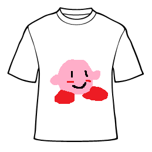
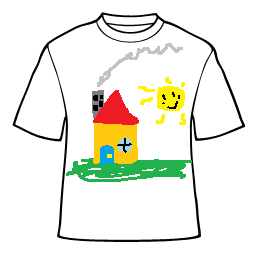
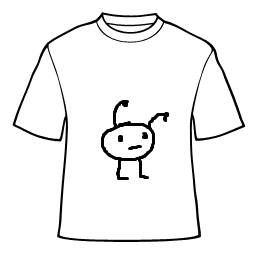
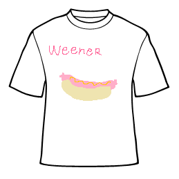

Here's a small gallery of my finest pieces of t-shirt artisanry. If you are interested in purchasing any of the work please go to the contact page and more information will be there for you. All of these took a tremendous amount of time, so don't be sparse in your viewing.